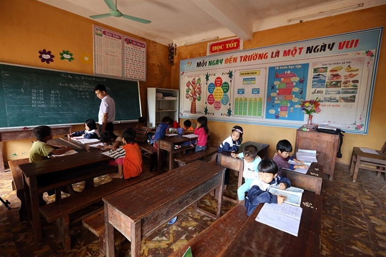
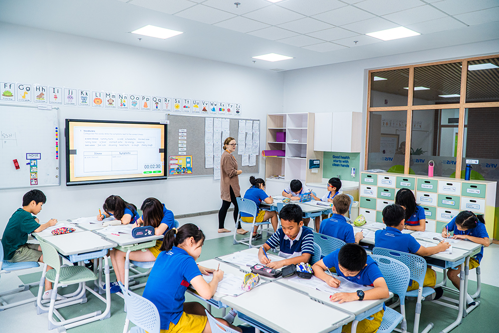
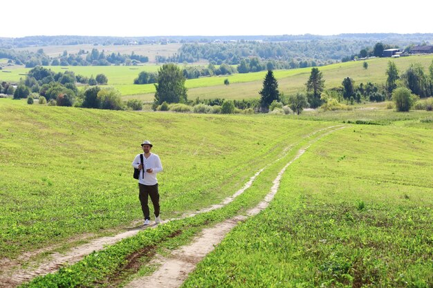
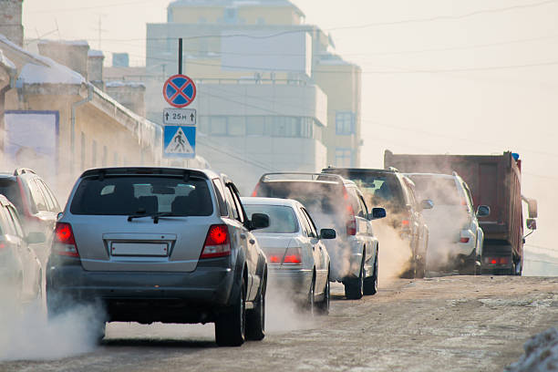
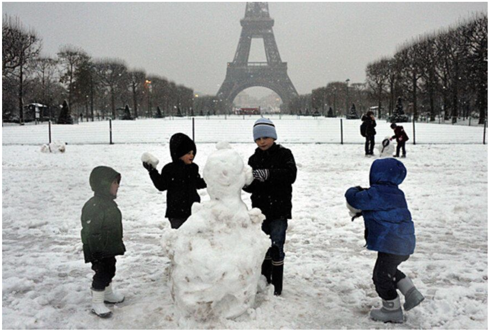
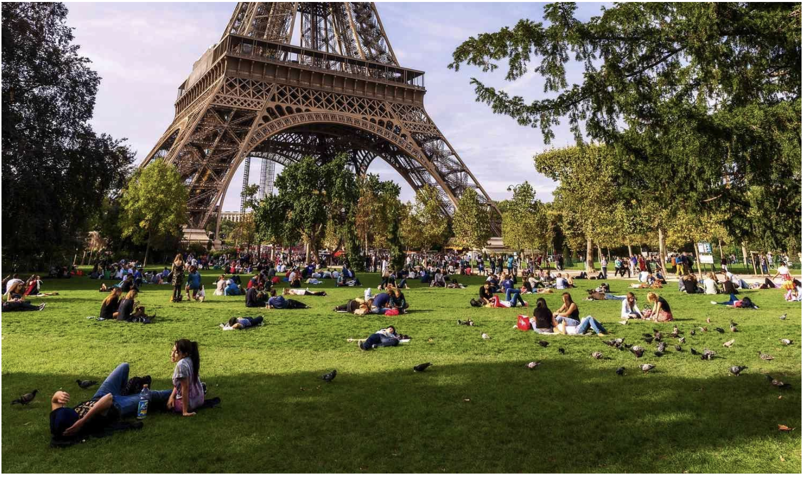
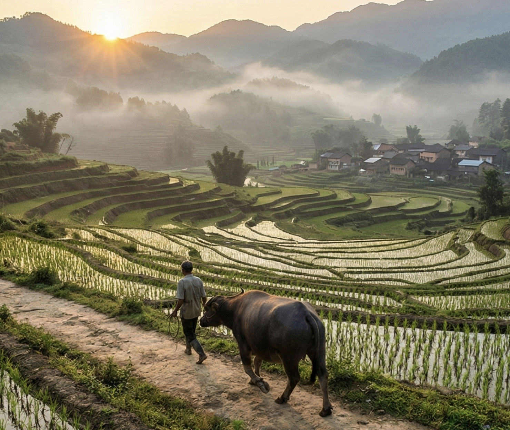

Các Cấu Trúc Cần Ghi Nhớ
1. Điểm tương đồng (Similarities)
- The common theme in the photos is...
- Both photos show...
- In both photos there are...
- You can see... in both photos.
2. Sự khác biệt (Differences)
- The first photo shows [A], whereas the second photo shows [B].
- Unlike the first photo, the second photo shows...
- In contrast to the first photo, the second photo...
- One obvious difference is (that)...
- Another difference is that...
3. Suy đoán (Speculation)
- It/They must be... (Chắc hẳn là...)
- It/They can't be... (Không thể nào là...)
- Judging by... (Dựa trên...)
- It seems to me that...
4. Bố cục bài nói (Structure)
- I'd like to start by looking at...
- First of all,... Second,... Finally,...
- Moving on to...
- To sum up... / In conclusion...
Week 1: Rural vs. Modern Classroom


📖 TỪ VỰNG CHỦ ĐỀ GIÁO DỤC
1. Mô tả lớp học đơn sơ
- Wooden desks and benches: Bàn ghế gỗ dài.
- Chalkboard / Blackboard: Bảng phấn đen/xanh.
- Peeling paint / Old walls: Tường cũ / bong tróc sơn.
- Basic / Simple facilities: Cơ sở vật chất cơ bản/đơn sơ.
- Remote area / Underprivileged: Vùng sâu vùng xa / Thiếu thốn.
2. Mô tả lớp học hiện đại
- Interactive whiteboard / Smartboard: Bảng tương tác thông minh.
- State-of-the-art facilities: Cơ sở vật chất hiện đại bậc nhất.
- Group arrangement: Sắp xếp bàn ghế theo nhóm.
- Spacious and bright: Rộng rãi và sáng sủa.
- Well-equipped: Được trang bị đầy đủ.
📋 BỐ CỤC BÀI NÓI
Bước 1: Giới thiệu (Introduction)
Chủ đề chung: Giáo dục / Môi trường học tập.
Key phrase: "The common theme in the photos is education and the learning environment."
Key phrase: "The common theme in the photos is education and the learning environment."
Bước 2: So sánh sự khác biệt về cơ sở vật chất (Facilities)
So sánh bàn ghế, bảng, ánh sáng. Dùng cấu trúc: Whereas, In contrast to.
Ví dụ: Bảng phấn vs. Bảng thông minh; Bàn ghế cũ vs. Bàn ghế mới.
Ví dụ: Bảng phấn vs. Bảng thông minh; Bàn ghế cũ vs. Bàn ghế mới.
Bước 3: So sánh về phương pháp học & Học sinh
Ảnh 1: Học sinh ngồi theo hàng truyền thống. Ảnh 2: Học sinh ngồi theo nhóm.
Key phrase: "The first photo shows a traditional teaching style...", "The second photo encourages teamwork..."
Key phrase: "The first photo shows a traditional teaching style...", "The second photo encourages teamwork..."
Bước 4: Suy đoán & Kết luận
Cảm nhận về điều kiện học tập? Sự công bằng trong giáo dục?
Key phrase: "The students in the second photo seem to be very lucky..."
Key phrase: "The students in the second photo seem to be very lucky..."
🗣️ BÀI TRẢ LỜI MẪU
Introduction
I’d like to start by looking at the common theme, which is education. Both photos show young students inside a classroom, but the learning conditions are completely different.
Tôi muốn bắt đầu bằng việc nhìn vào chủ đề chung, đó là giáo dục. Cả hai ảnh đều cho thấy các học sinh nhỏ trong lớp, nhưng điều kiện học tập thì hoàn toàn khác nhau.
Differences - Facilities
The first photo shows a classroom in a remote area. The facilities look quite old and basic. You can see wooden desks, a traditional chalkboard, and the walls look a bit worn out.
In contrast to the first photo, the second photo shows a very modern classroom, possibly in an international school. It is well-equipped with bright lights, colorful furniture, and a large interactive smartboard on the wall.
In contrast to the first photo, the second photo shows a very modern classroom, possibly in an international school. It is well-equipped with bright lights, colorful furniture, and a large interactive smartboard on the wall.
Bức ảnh đầu cho thấy một lớp học ở vùng nông thôn hoặc vùng sâu. Cơ sở vật chất trông khá cũ và cơ bản. Bạn có thể thấy bàn gỗ, bảng phấn truyền thống và tường hơi cũ nát. Trái ngược với ảnh đầu, ảnh hai cho thấy một lớp học rất hiện đại, có thể là trường quốc tế. Nó được trang bị tốt với đèn sáng, nội thất nhiều màu và bảng tương tác thông minh lớn trên tường.
Differences - Methods
Another difference is the teaching style. In the first picture, the students are sitting in rows facing the teacher, which is a very traditional way of learning.
Unlike the first photo, the students in the second photo are sitting in groups. This suggests that their learning method focuses more on teamwork.
Unlike the first photo, the students in the second photo are sitting in groups. This suggests that their learning method focuses more on teamwork.
Một điểm khác biệt nữa là phương pháp dạy. Ở ảnh 1, học sinh ngồi theo hàng hướng về giáo viên, đây là cách học rất truyền thống. Không giống ảnh 1, học sinh ở ảnh 2 ngồi theo nhóm. Điều này gợi ý rằng phương pháp học của họ tập trung hơn vào tương tác và làm việc nhóm.
Conclusion
Judging by the environment, the students in the second photo must have access to better resources. However, it seems to me that the students in the first photo are also very eager to learn. To sum up, while good facilities can make learning easier, I believe the most important thing is the students' attitude.
Đánh giá qua môi trường, học sinh ở ảnh 2 chắc hẳn được tiếp cận tài nguyên tốt hơn. Tuy nhiên, với tôi dường như các học sinh ở ảnh 1 cũng rất ham học. Tóm lại, dù cơ sở vật chất tốt giúp việc học dễ dàng hơn, tôi tin điều quan trọng nhất vẫn là thái độ của học sinh.
Week 2: Countryside vs. City Traffic


📖 TỪ VỰNG CHỦ ĐỀ GIAO THÔNG & MÔI TRƯỜNG
1. Mô tả nông thôn (Countryside)
- Peaceful scene: Khung cảnh yên bình.
- Dirt path: Đường đất.
- Surrounded by greenery: Bao quanh bởi cây xanh.
- Fresh air: Không khí trong lành.
- Slow-paced lifestyle: Lối sống chậm rãi.
2. Mô tả thành phố (City Traffic)
- Traffic jam / Congestion: Tắc đường / Kẹt xe.
- Exhaust fumes / Smoke: Khói thải.
- Polluted air: Không khí ô nhiễm.
- Hustle and bustle: Sự xô bồ, hối hả.
- Stuck in traffic: Bị kẹt xe.
📋 BỐ CỤC BÀI NÓI LOGIC
Bước 1: Giới thiệu (Introduction)
Nêu chủ đề chung: Môi trường (Environment) và Cách di chuyển (Travel).
Key phrase: "The common theme in the photos is the environment and how people travel."
Key phrase: "The common theme in the photos is the environment and how people travel."
Bước 2: So sánh chính (Main Comparison)
Yên bình vs. Ồn ào / Không khí trong lành vs. Ô nhiễm.
Key phrase: "The first photo shows a peaceful scene, whereas the second photo shows..."
Key phrase: "The first photo shows a peaceful scene, whereas the second photo shows..."
Bước 3: Suy đoán (Speculation)
Cảm xúc của con người? (Thư giãn vs. Căng thẳng)
Key phrase: "The man must be feeling relaxed...", "The drivers must be feeling stressed..."
Key phrase: "The man must be feeling relaxed...", "The drivers must be feeling stressed..."
Bước 4: Kết luận (Conclusion)
Sở thích cá nhân: Bạn thích sống ở đâu hơn?
🗣️ BÀI TRẢ LỜI MẪU
Introduction
I’d like to start by saying that the common theme in the photos is the environment and how people travel. Both photos show people moving from one place to another, but in completely different settings.
Tôi muốn bắt đầu bằng việc nói rằng chủ đề chung là môi trường và cách mọi người di chuyển. Cả hai ảnh đều cho thấy sự di chuyển, nhưng ở bối cảnh hoàn toàn khác nhau.
Differences
The first photo shows a peaceful countryside scene, whereas the second photo shows a busy city street.
One obvious difference is the level of pollution. In the first photo, there is a man walking alone on a dirt path surrounded by green grass and fresh air. In contrast to the first photo, the second photo is full of cars stuck in a traffic jam. You can see thick white smoke coming from the cars, which means the air must be very polluted.
One obvious difference is the level of pollution. In the first photo, there is a man walking alone on a dirt path surrounded by green grass and fresh air. In contrast to the first photo, the second photo is full of cars stuck in a traffic jam. You can see thick white smoke coming from the cars, which means the air must be very polluted.
Bức ảnh đầu là cảnh nông thôn yên bình, trong khi bức ảnh hai là đường phố đông đúc. Một sự khác biệt rõ ràng là mức độ ô nhiễm. Ở ảnh 1, có người đàn ông đi bộ một mình giữa cỏ xanh và không khí trong lành. Trái ngược lại, ảnh 2 toàn là xe cộ kẹt cứng. Bạn có thể thấy khói trắng dày đặc, nghĩa là không khí chắc chắn rất ô nhiễm.
Speculation
Judging by the green grass and the blue sky in the first photo, it looks like a warm summer. The man must be feeling very relaxed.
Unlike the first photo, the second photo looks cold and grey. I imagine that the drivers must be feeling stressed or impatient because of the traffic and the noise.
Unlike the first photo, the second photo looks cold and grey. I imagine that the drivers must be feeling stressed or impatient because of the traffic and the noise.
Đánh giá dựa trên cỏ xanh và trời xanh ở ảnh 1, có vẻ như là mùa hè hoặc xuân. Người đàn ông chắc hẳn rất thư giãn. Không giống ảnh 1, ảnh 2 trông lạnh lẽo và xám xịt. Tôi tưởng tượng rằng các tài xế chắc hẳn rất căng thẳng hoặc mất kiên nhẫn vì kẹt xe và tiếng ồn.
Conclusion
To sum up, the first picture represents a slow and healthy lifestyle, while the second picture represents the busy, polluted reality of modern city life. Personally, I would prefer to be in the place shown in the first photo.
Tóm lại, bức ảnh đầu đại diện cho lối sống chậm và lành mạnh, trong khi bức ảnh hai đại diện cho thực tế bận rộn, ô nhiễm của đô thị hiện đại. Cá nhân tôi thích ở nơi như bức ảnh đầu tiên hơn.
Week 3: Paris in Winter vs. Summer


📖 TỪ VỰNG CHỦ ĐỀ THỜI TIẾT & MÙA
1. Từ vựng mô tả (Weather & Clothes)
- Seasons: Winter (Mùa đông), Summer (Mùa hè).
- Weather: Snowy, Freezing, Overcast, Sunny, Warm, Pleasant.
- Clothes: Winter coats, Scarves, Gloves, Light clothes.
- Activities: Building a snowman, Picnicking, Sunbathing.
2. Cấu trúc so sánh (Comparison)
- The common theme in the photos is... (Chủ đề chung là...)
- In contrast to... (Trái ngược với...)
- Whereas / While... (Trong khi...)
- One obvious difference is... (Một điểm khác biệt rõ là...)
📋 BỐ CỤC BÀI NÓI
Bước 1: Giới thiệu (Introduction)
Nhận diện địa điểm: Cả hai đều chụp tháp Eiffel (Paris).
Nêu chủ đề chung: Cùng một địa điểm nhưng thời gian/mùa khác nhau.
Nêu chủ đề chung: Cùng một địa điểm nhưng thời gian/mùa khác nhau.
Bước 2: So sánh chi tiết (Detailed Comparison)
Thời tiết & Màu sắc: Ảnh 1 trắng xóa/lạnh vs Ảnh 2 xanh lá/ấm.
Con người & Hoạt động: Ảnh 1 trẻ em chơi tuyết, đồ dày vs Ảnh 2 thư giãn, picnic, đồ mỏng.
Con người & Hoạt động: Ảnh 1 trẻ em chơi tuyết, đồ dày vs Ảnh 2 thư giãn, picnic, đồ mỏng.
Bước 3: Suy đoán (Speculation)
Dùng must be / can't be / looks like.
Key phrase: "It must be very cold in the first photo..."
Key phrase: "It must be very cold in the first photo..."
Bước 4: Kết luận (Conclusion)
Bạn thích đi du lịch vào mùa nào hơn? Tại sao?
🗣️ BÀI TRẢ LỜI MẪU
Introduction
I’d like to start by saying that the common theme in the photos is the location. Both photos show the famous Eiffel Tower in Paris, but they were taken in completely different seasons.
Tôi muốn bắt đầu bằng việc nói rằng chủ đề chung là địa điểm. Cả hai ảnh đều chụp tháp Eiffel nổi tiếng ở Paris, nhưng được chụp vào những mùa hoàn toàn khác nhau.
Differences - Weather
The first photo shows a cold winter day, whereas the second photo shows a beautiful, sunny day.
One obvious difference is the color. In the first photo, everything is covered in white snow and the sky looks overcast. In contrast to the first photo, the second photo is full of bright colors, with green grass and trees.
One obvious difference is the color. In the first photo, everything is covered in white snow and the sky looks overcast. In contrast to the first photo, the second photo is full of bright colors, with green grass and trees.
Bức ảnh đầu là ngày đông lạnh, trong khi bức ảnh hai là ngày nắng đẹp. Một khác biệt rõ ràng là màu sắc. Ở ảnh 1, mọi thứ phủ tuyết trắng và trời trông xám xịt. Trái ngược lại, ảnh 2 tràn ngập màu sắc tươi sáng với cỏ cây xanh mướt.
Differences - Activities
Because of the weather, people are doing different things. In the first picture, I can see some children building a snowman. They are wearing heavy winter coats, scarves, and gloves.
Unlike the first photo, the people in the second photo are relaxing on the grass. Some are having picnics. They are wearing light clothes like T-shirts.
Unlike the first photo, the people in the second photo are relaxing on the grass. Some are having picnics. They are wearing light clothes like T-shirts.
Vì thời tiết, mọi người làm những việc khác nhau. Ở ảnh 1, tôi thấy vài đứa trẻ đang đắp người tuyết. Chúng mặc áo khoác dày, đội mũ và đi ủng để giữ ấm. Không giống ảnh 1, mọi người ở ảnh 2 đang thư giãn trên cỏ. Một số đang dã ngoại. Họ mặc đồ mỏng như áo thun.
Speculation & Conclusion
Judging by the snow, it must be freezing in the first photo, but the children look like they are having fun. In the second photo, the atmosphere seems very peaceful.
Personally, I prefer the scene in the second photo because I love sitting outdoors and enjoying the sun rather than being in the cold.
Personally, I prefer the scene in the second photo because I love sitting outdoors and enjoying the sun rather than being in the cold.
Đánh giá qua lượng tuyết, ảnh 1 chắc hẳn lạnh cóng, nhưng lũ trẻ trông rất vui. Ở ảnh 2, không khí dường như rất yên bình. Cá nhân tôi thích khung cảnh ở bức ảnh thứ hai hơn vì tôi thích ngồi ngoài trời tận hưởng ánh nắng hơn là chịu lạnh.
Week 4: Modern City vs. Rural Life


📖 TỪ VỰNG CHỦ ĐỀ LỐI SỐNG
1. Mô tả thành phố (Modern City)
- Skyscrapers: Các tòa nhà chọc trời.
- Highways / Interchanges: Đường cao tốc.
- Artificial / Neon lights: Ánh sáng nhân tạo.
- Bustling / Hectic: Nhộn nhịp, hối hả.
- Traffic trails: Vệt sáng do đèn xe.
2. Mô tả nông thôn (Rural Life)
- Terraced fields: Ruộng bậc thang.
- Water buffalo: Con trâu nước.
- Mist / Fog: Sương mù.
- Sunrise / Golden hour: Bình minh.
- Tranquil / Serene: Yên bình.
📋 BỐ CỤC BÀI NÓI
Bước 1: Giới thiệu (Introduction)
Nêu chủ đề chung: Sự tương phản về lối sống (Lifestyles) hoặc Môi trường sống (Living environments).
Key phrase: "The common theme in the photos is different living environments."
Key phrase: "The common theme in the photos is different living environments."
Bước 2: So sánh sự đối lập (Contrast)
Ánh sáng: Đèn điện (nhân tạo) vs. Mặt trời (tự nhiên).
Kiến trúc: Bê tông cốt thép vs. Đồi núi, ruộng đồng.
Tốc độ: Xe chạy vùn vụt vs. Người và trâu đi bộ chậm rãi.
Kiến trúc: Bê tông cốt thép vs. Đồi núi, ruộng đồng.
Tốc độ: Xe chạy vùn vụt vs. Người và trâu đi bộ chậm rãi.
Bước 3: Suy đoán (Speculation)
Cảm giác của người sống ở đó?
Key phrase: "Life in the city must be fast and stressful", "The farmer seems to be starting a hard working day".
Key phrase: "Life in the city must be fast and stressful", "The farmer seems to be starting a hard working day".
Bước 4: Kết luận (Conclusion)
Bạn thích sự tiện nghi hay sự yên bình?
🗣️ BÀI TRẢ LỜI MẪU
Introduction
I’d like to start by saying that these two photos show a dramatic contrast. The common theme is human settlement, but the lifestyles shown are completely opposite.
Tôi muốn bắt đầu bằng việc nói rằng hai bức ảnh này cho thấy sự tương phản kịch tính giữa hai thế giới. Chủ đề chung là nơi cư trú của con người, nhưng lối sống thì hoàn toàn đối lập.
Differences - Visuals & Pace
The first photo shows a modern city at night, filled with skyscrapers and bright neon lights. Whereas the second photo shows a traditional rural scene with terraced fields and mist covering the hills.
One obvious difference is the light. In the first photo, the light is artificial. In contrast, the second photo is lit by the sunrise.
Another difference is the pace of life. In the city, you see traffic trails, meaning life must be hectic. Unlike the first photo, the second photo shows a farmer walking slowly with his water buffalo. It suggests a tranquil way of life.
One obvious difference is the light. In the first photo, the light is artificial. In contrast, the second photo is lit by the sunrise.
Another difference is the pace of life. In the city, you see traffic trails, meaning life must be hectic. Unlike the first photo, the second photo shows a farmer walking slowly with his water buffalo. It suggests a tranquil way of life.
Bức ảnh đầu là thành phố hiện đại về đêm, đầy những tòa nhà chọc trời và đèn neon. Trong khi đó bức ảnh hai là cảnh nông thôn truyền thống với ruộng bậc thang và sương mù bao phủ đồi. Một sự khác biệt rõ ràng là ánh sáng. Ảnh 1 là ánh sáng nhân tạo. Trái ngược lại, ảnh 2 được chiếu sáng bởi bình minh. Một điểm khác biệt nữa là nhịp sống. Ở thành phố, bạn thấy các vệt sáng xe, nghĩa là cuộc sống rất hối hả. Không giống ảnh đầu, ảnh hai cho thấy người nông dân đi chậm rãi cùng con trâu. Nó gợi ý một lối sống yên bình.
Speculation & Conclusion
Judging by the infrastructure, the people in the first photo probably rely on technology. On the other hand, the man in the second photo must be a hard-working farmer.
Personally, I admire the beauty of the countryside, but I think I would find it easier to live in the modern city with all its conveniences.
Personally, I admire the beauty of the countryside, but I think I would find it easier to live in the modern city with all its conveniences.
Đánh giá qua cơ sở hạ tầng, người ở ảnh 1 có lẽ phụ thuộc công nghệ. Mặt khác, người đàn ông ở ảnh 2 chắc hẳn là nông dân chăm chỉ. Cá nhân tôi ngưỡng mộ vẻ đẹp nông thôn, nhưng tôi nghĩ mình sẽ thấy dễ sống hơn ở thành phố hiện đại với mọi tiện nghi của nó.